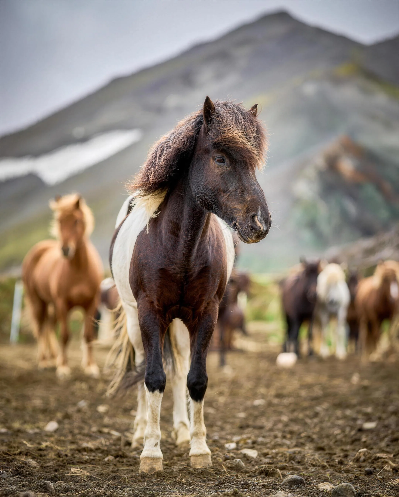
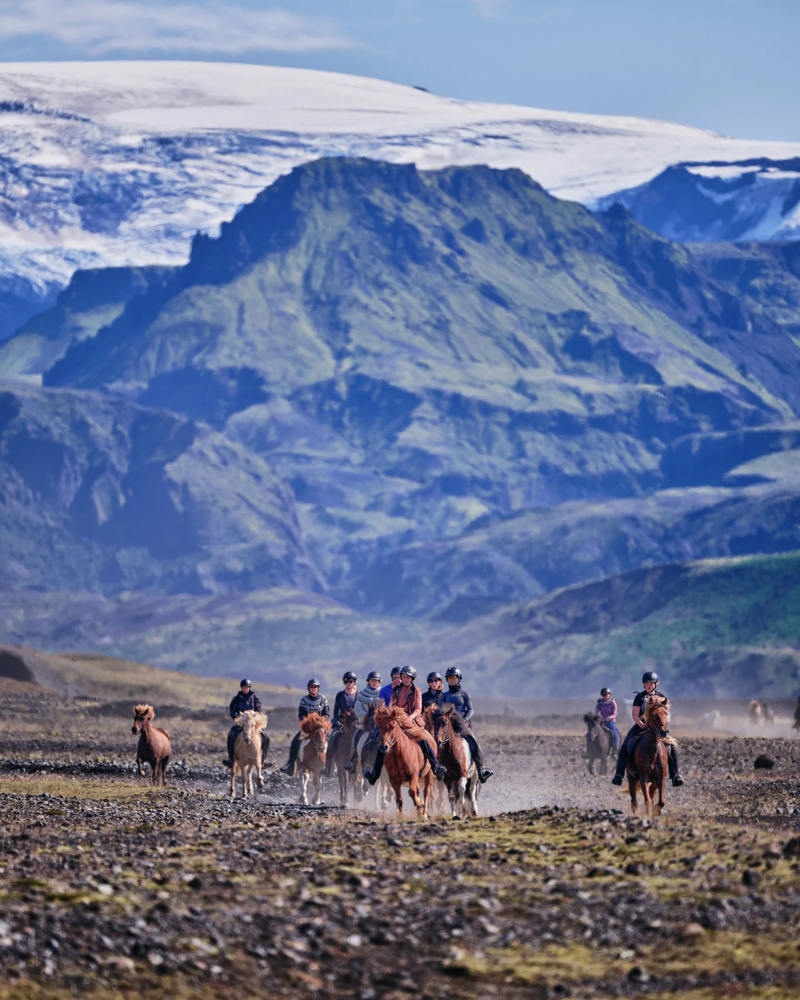
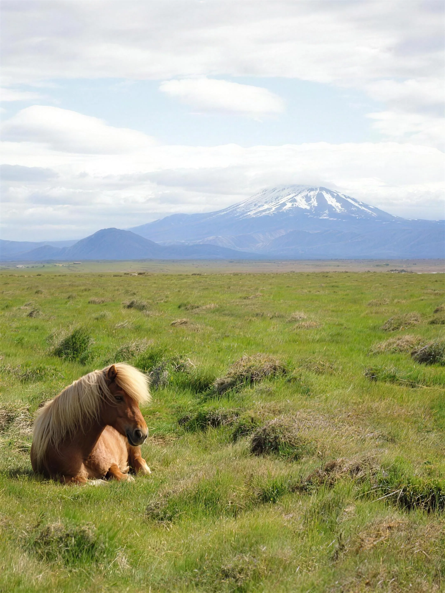
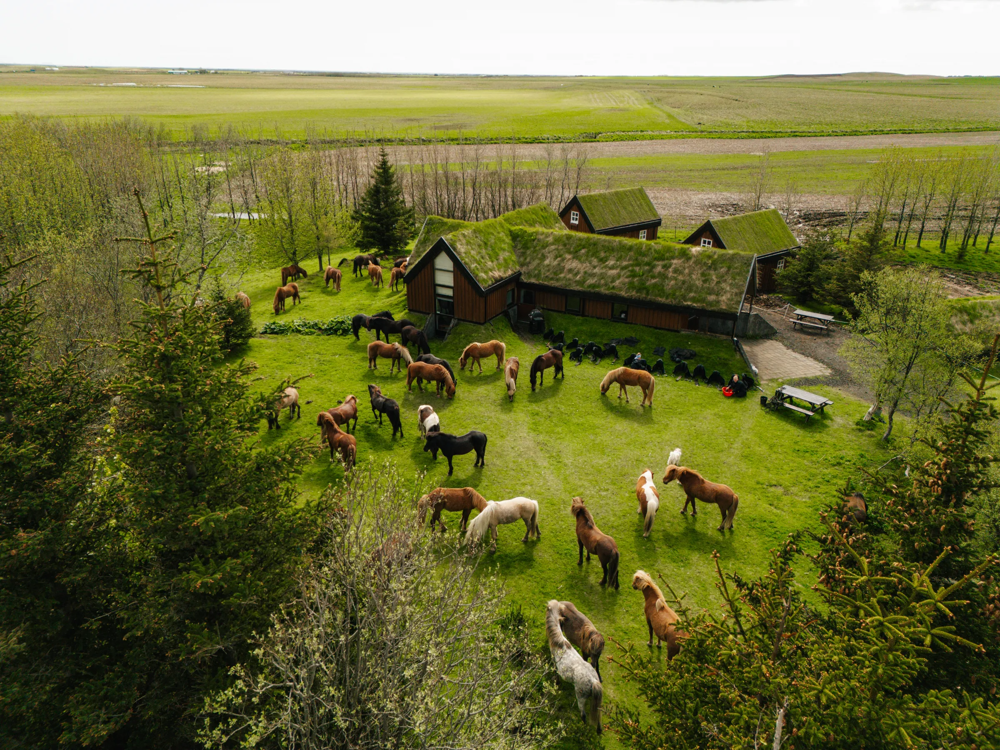
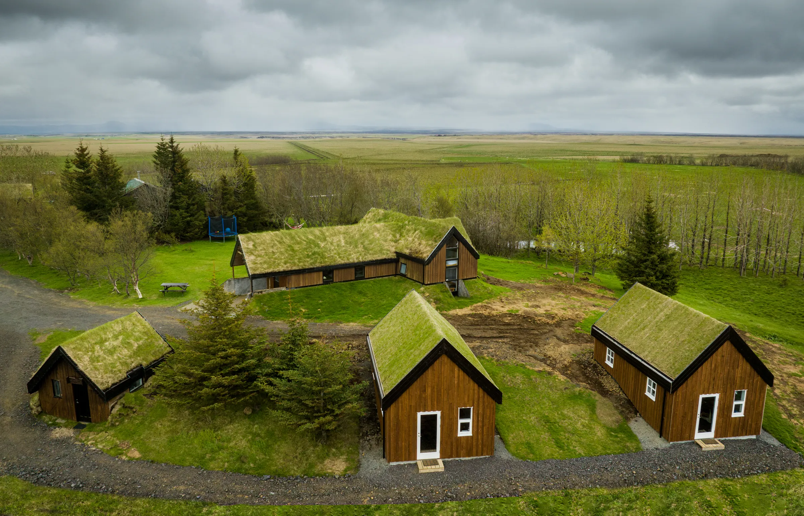
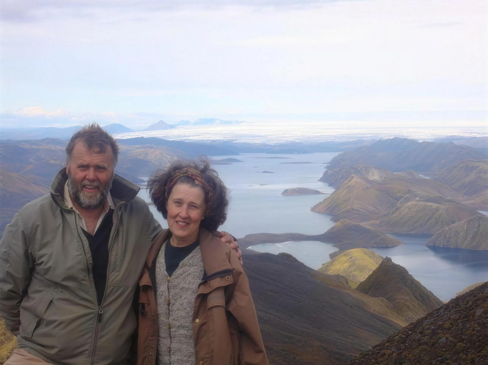

2 klst. · 20.000 kr
Meðfram Rangá
Dæmi um brottfarir í dag
Engin dæmibrottför innan bókunarfrests í dag.



Frá Austvaðsholti liggja leiðir okkar um hálendið. Fjölskyldan hefur boðið gestum á hestbak síðan 1981, á hestum sem flestir eru fæddir og aldir upp á bænum.
¹ Samkvæmt íslenskri kynningu bæjarins.
Frá heimahögum að Landmannalaugum og inn í Þórsmörk. Ferðir ársins 2027.
Um túnin, meðfram Rangá og út í hraunið. Litlir hópar, yfirleitt 2 til 6 manns.
Byrjendur: íslenska síðan nefnir fyrsta reiðtúrinn en enska síðan tekur ekki við byrjendum. Hafðu samband til að staðfesta áður en þú velur ferð. Hámarksþyngd er 90 kg.
Verð eru birt á íslensku síðunni. Enska síðan birtir 22.000 Isk / 33.000 Isk / 55.000 isk. Staðfesta þarf rétt verð.
Enska dagstúrasíðan tilgreinir miðjan apríl til loka október. Tímasetningar hér eru Dæmi.

Torfið yfir þakinu, sveitin allt í kring. Gisting á bænum, með eða án fulls fæðis.

Sumarhús á bænum. Eldhús, sérbaðherbergi og aðgangur að gufubaði. Myndin sýnir húsin á bænum.
Jón Benediktsson og Nicole Chéné stofnuðu Hekluhesta. Nú halda Aníta og Stefnir áfram fjölskylduhefðinni, með virðingu fyrir hestunum og náttúrunni.
Jón og Nicole ríða um Fjallabak. Hugmyndin kviknar.
Fyrstu gestirnir koma til Austvaðsholts.
Aníta og Stefnir taka við taumunum.

Veldu ferð, brottför og knapa. Þetta er frumgerð, engin bókun eða greiðsla fer fram.